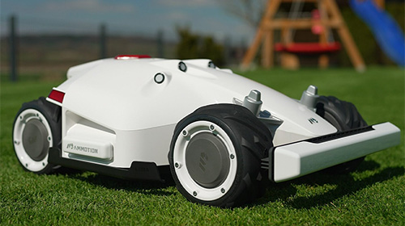

Allt började när Luba Buffel, en gräsallergisk före detta rodeoryttare, somnade på sin egen gräsmatta och drömde om en värld där gräset klipper sig självt. Samtidigt kämpade uppfinnaren Bertil “Båg” Bågström med att bygga en självgående osthyvel. När Luba vaknade och nös sig fram till idén om en robotgräsklippare slog de sina hjärnor ihop och Automatiserade gräsklipparbolaget Luba Buffel & Båg var fött. Namnet? Buffel för Lubas stenhårda beslutsamhet. Båg för Bågströms små… kreativa genvägar. Deras klippare är så smarta att de kan undvika grannens katt (oftast), skicka passivt aggressiva sms om gräslängd, och ibland filosofera över maskrosor.eras motto: ”Vi klipper inte gräs. Vi förhandlar det till marknivå.”.
Hej